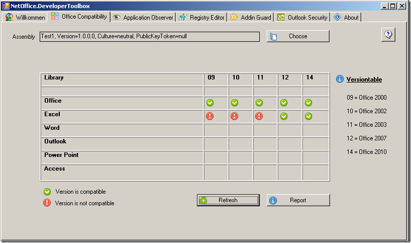

Office Compatiblity
What does Office Compatibility do for you?
If you develop a Office Solution with NetOffice (or any other API) which should be compatible to a certain or multiple MS-Office version, you have to make sure, that the functionality you use (objects, methods) is supported by this versions of MS-Office. For that reason, NetOffice provides this information as IntelliSense Text for all Office objects. Although this is a good help for developers, it is not sufficient for big projects to ensure that your Office Solution works with the MS-Office version you chose. The manual effort of testing and the associated error-rate are too high. The Office Compatibility Component checks which MS-Office functionality the assembly you created is calling and shows you with which MS-Office versions your solution is compatible. You can make a valid and tested assertion about the compatibilty and comunicate that to your clients and end-users.
Screenshot
Example for an Assembly which uses functionality only present in Excel 2007 and 2010.

Functionality and Settings
You can choose the assembly (which uses NetOffice to access MS-Office programatically) in the upper area. The table gives you an overview which Office-version your assembly can support. Click on the button "Report" if you need a more detailed overview, which parts of your code work or won't work with which version.
Remarks
If you use the Office Compatibility Feature of the Developer Toolbox, you will maybe see that your assemble works with no version of the targeted Office application. This is not a bug in the program, the reason is that you address different functionality which are only supported by different versions. In other words: If you use a functionality which is only supported in Office 2000 and Office 2002 and also use another functionality which is only provided by Office 2003, 2007 and 2010, then this means that your program-code will bring up an error in any case, regardless which Office version is installed on the system. Therefore, Office Compatibility shows you that this assembly is not compatible with any version of MS-Office.